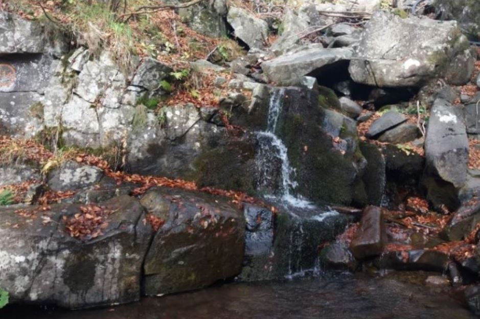
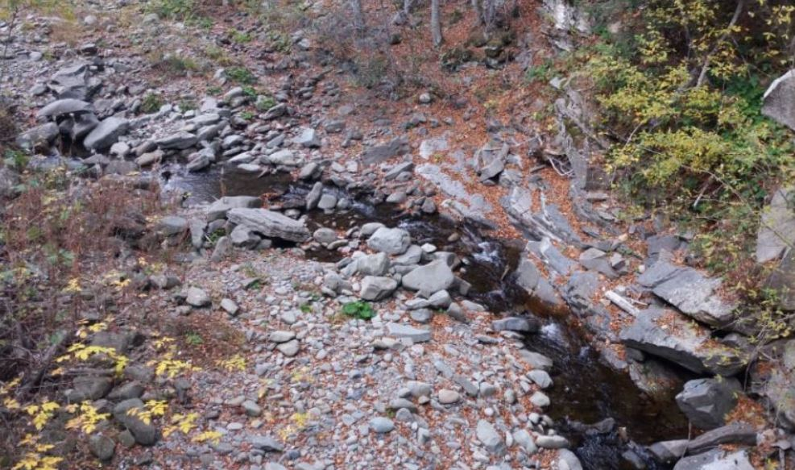

Il fiume di montagna
Nel nostro paese si trova il 6% delle riserve d’acqua dolce d’Europa. Nel rifornimento idrico di un territorio le precipitazioni che avvengono alle quote più elevate sono fondamentali.
Buona parte sono infatti precipitazioni nevose, che rilasciano acqua in tempi lunghi e quindi elemento importantissimo per il bilancio idrico della zona a valle. Ricordiamo che la neve è fondamentale per il rifornimento d’acqua del Lago Nero, oltre ad essere importante per il turismo invernale nella valle.
I torrenti si originano a monte di un bacino idrografico che converge verso un canale principale. Come gli agenti atmosferici anche i fiumi esercitano la loro azione erosiva con conseguenze quali trasporto di detriti e deposito di questi nei vari tratti della valle.
Con questi fenomeni, i fiumi non solo modellano il territorio in cui scorrono ma modificano continuamente anche la loro pendenza. Lungo il loro percorso i fiumi di montagna possono portare anche grandi massi, vista la forte pendenza ed il loro corso può variare anche molto velocemente.
Quando si manifestano piene, queste possono essere devastanti localmente, anche se poco importanti per le zone più a valle. Avvengono infatti con pochissimo preavviso, perché determinate da forti precipitazioni avvenute a poca distanza dal letto del torrente.

Il Sestaione
La montagna pistoiese cade in parte sul bacino idrografico del Reno situato sul versante appenninico settentrionale e in maggior parte sui bacini del Serchio, Valdinievole e della Conca di Firenze. Essa è coronata da vette che vanno dai 1500 m in su (Alpe delle Tre Potenze, Monte Gomito, Libro Aperto e Poggio delle Ignude).
L' Alta val di Lima costituisce la parte più elevata della montagna pistoiese, in questa area è situato il Torrente Sestaione, la cui sorgente nasce da delle infiltrazioni del Lago Nero nel terreno.
Esso è affluente di destra del fiume Lima (fiume che possiede un bacino imbrifero di 306 Kmq ed una portata media di 12 mc/s, comunque mai inferiore in periodo di magra a 3 mc/s) dove sbocca poco a monte di Cutigliano, portando con sé le acque provenienti dall'Alpe delle Tre Potenze (1940 m), Uccelliera (1854 m) e Monte Gomito (1892 m).
Dall’Orto Botanico si può osservare il corso del Sestaione.